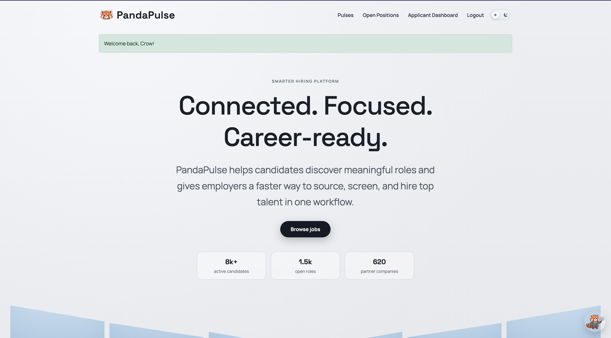

Engineer, security researcher, problem solver
I got into technology because I wanted to know how things work underneath. That curiosity is what brought me to computer engineering at Georgia Tech.
I think good software should hold up when something goes wrong, not just on a good day. Some days that means hardening a Linux machine against an attack. Other days it means building the backend of a web app. Either way, I want the result to feel simple and safe for the person on the other side of the screen.
To me, engineering is the discipline of building tools people can actually trust. I grew up in Lilburn, Georgia, and the community there shapes how I work.
- Degree
- B.S. computer engineering, Georgia Tech, May 2028
- Threads
- Cybersecurity, and information internetworks
- Home
- Lilburn, Georgia. U.S. citizen.
- Interests
- Defensive security, embedded systems, radio, CTFs and robotics
Things I’ve built and broken
Every card opens a full write-up with screenshots, what I did, and what I learned.
-

Binge
A tracker for movies, shows and books that won best project out of 100+ students, then grew into native Apple TV and Fire TV apps.
Read the case study -
Wireless protocol research
How campus door buttons talk over the air, worked out from captured signals alone.
Read the write-up -

SACC Hoops
Live scores, a snake draft and stat leaderboards for my church’s basketball tournament, used courtside on phones.
See the project -

PandaPulse
A hiring platform in Django with three user roles and 20+ features we invented. Placed 3rd across both class sections.
See the project -

GT Movies Store
My first Django app, 21 features, written line by line, plus a reporting feature I designed myself.
See the project -
CyberPatriot and CTFs
Led my high school’s team to the Platinum tier three years straight, and took 3rd at Lockheed Martin CyberQuest.
See the competitions
Binge kept going after the grade
Five of us built it for CS 2340 in April and it won best project. I kept working on it. By October I had written most of the new code, including two native TV apps and the security fixes for its API.
- Movies in the catalog
- 78,357
- TV shows
- 21,446
- Books
- 29,788
- Lines in the two TV apps
- 17,000
-

The class project
A social tracker with a forum and watch rooms. I built the AI chatbot, the episode tracker, live TV and the security fixes.
-


Phones and profiles
Over the summer we rebuilt it for phones, added household profiles with a kids filter, and wrote end-to-end tests.
-

Apple TV and Fire TV
I rebuilt the site like a streaming service and wrote native TV apps in Swift and Kotlin.
Reading a door button’s radio
The accessibility buttons on several campus buildings open their doors over the air. With a software-defined radio and Universal Radio Hacker I worked out their protocol from captures alone, with no datasheet. I only listened. I never transmitted or replayed anything.
- Band
- 900 MHz ISM
- Modulation
- FSK
- Hopping
- 3 channels
- Topology
- Point to multipoint
Where I’ve worked
Five roles, newest first. The short version is on the résumé.
-
AI and machine learning instructor
iD Tech Camps, Atlanta
- Built an automated security assessment system that set up vulnerable machines and scored students on how they exploited and defended them.
- Taught cybersecurity to more than 60 students, walking through real attack techniques and the fixes that stop them.
-
Firmware and software engineering intern
American Megatrends (AMI), remote
- Wrote and audited firmware and communication protocols in C for server hardware, using MCTP and PLDM, with integrity checks that run below the operating system.
- Researched system control protocols and built algorithms for moving platform management data efficiently.
- Added error detection so low-level messages arrive intact, then tested the protocol against the hardware specs and traced edge cases and failure paths.
-
Student intern and curriculum designer
GSMST computer science department, Lawrenceville
- Wrote AI-focused lessons for new computer science classes, including web scraping and Raspberry Pi projects.
- Helped teachers with hardware setup, Linux troubleshooting and machine learning class projects.
- Tuned the school’s Unitree Go2 robot dog, calibrating its sensors and adjusting its control system.
-
Cybersecurity head and chief of competitions
GSMST computer science club, Lawrenceville
- Led the club’s top five-person team to three straight CyberPatriot National Semifinals at the Platinum tier.
- Placed in national CTFs, including 3rd at Lockheed Martin CyberQuest, and competed in PicoCTF, LINE CTF and the Georgia TSA Cybersecurity CTF.
- Hardened and monitored Ubuntu, Fedora, Windows 10 and Windows Server machines and answered intrusions, with Python, Bash and PowerShell scripts that found misconfigurations faster.
- Taught weekly security sessions to 30+ students on finding, exploiting and fixing vulnerabilities. More on the competitions
-
Summer student intern
Joseph Maxwell Cleland Atlanta VA Medical Center, Decatur
- Supported the Medical Media department with day-to-day office work.
- Worked with the operating room charge nurse to keep medical staff in touch.
- Organized surgery schedules, tracked operating room status and kept the chief nurse’s documents current in Microsoft Office.
What I work with
- Security
- Vulnerability assessment, penetration testing, web and binary exploitation, system hardening and monitoring, incident response, secure code review, digital forensics
- Reverse engineering and radio
- Ghidra, firmware in C, MCTP and PLDM, software-defined radio, Universal Radio Hacker, RISC-V assembly
- Languages
- C, Python, Java, JavaScript, SQL, Swift, Kotlin, Bash, PowerShell, MATLAB
- Security tools
- Wireshark, Metasploit, Autopsy, Steghide, Cisco Packet Tracer
- Platforms
- Linux (Ubuntu, Fedora, Kali, Debian), Windows and Windows Server, macOS, tvOS, Android TV
- Hardware
- Raspberry Pi, Arduino Uno and Nano, the Unitree Go2 robot, SDR receivers
- Building software
- Git and GitHub, React, Django, Express, Supabase, Vercel, PythonAnywhere, Xcode, Playwright, CI/CD
- Writing and speaking
- Technical reports, design proposals, instruction manuals, presentations
- Certifications
- Google Cybersecurity Certificate. CompTIA Security+ in progress.
School
Georgia Institute of Technology
3.61 GPA
B.S. computer engineering, cybersecurity and information internetworks threads, August 2025 to May 2028. Dean’s List. Member of GreyHat, the campus security club.
Coursework
Data structures and algorithms, computer communications, objects and design, programming for hardware and software systems, and ECE 1100.
Gwinnett Technical College
4.00 GPA
Dual enrollment in the cyber crime specialist program, 2023 to 2024. Information security fundamentals, computer forensics, and hardware installation and maintenance.
Where I’m headed
Three steps, and how I plan to get to each one.
-
The next five years
Security engineer
Move into a full-time security role, in offensive, defensive or hardware security.
How
Use my cybersecurity and networking threads at Georgia Tech to go deep on secure systems and network protocols, and take security internships along the way.
-
Five to ten years
Technical lead and security architect
Lead major security projects and guide an engineering team.
How
Build leadership through student organizations now, then take on bigger scope at work, from individual contributor to team lead.
-
Long term
Specialized security operations
Work at the highest level, possibly in government or in specialized offensive analysis.
How
Go after programs like the NSA cybersecurity co-op and the Validin internship that build clearances and advanced offensive and intelligence skills.
The one-page version
Everything above, on one page for your files.